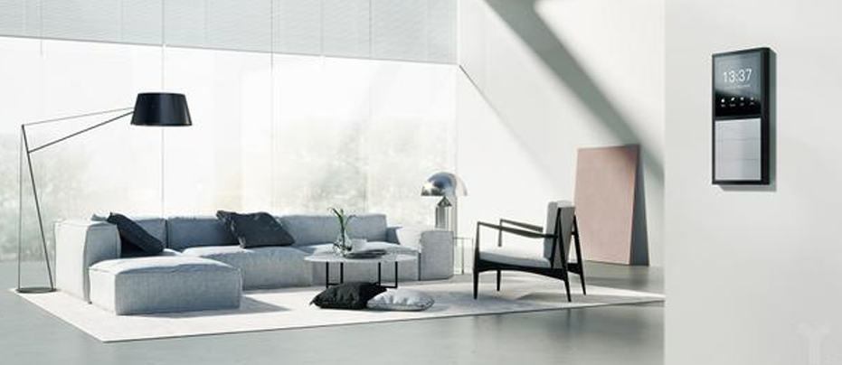

从1997年比尔·盖茨的智能豪宅落成开始计算，至今已经20年过去了，但无论国外还是国内，在很长一段时间里，所谓的智能家居其实就是通过一些模块，把家中的电器用遥控器控制起来。2014年Google收购NEST，接下来亚马逊推出Echo，国内外智能音响大战正式拉开序幕。从大且复杂的遥控器到各类超级APP，再到五花八门的智能音箱，这些产品都曾一度被智能家居行业寄予“入口”的厚望，风水轮流转，却谁也没能真正抓住“入口”。
10月17日，欧瑞博发布革命性AI新品MixPad超级智能面板，将灯光、地暖、新风等所有家居控制整合到一个非常美观的智能墙面面板。MixPad同时兼容按键、触摸屏、语音等多种交互方式还内置强大的四核A7处理器和环境传感器、BLE/Wi-Fi/Zigbee协议，通过人工智能和大数据技术，以实现美观交互和家居智能化。
重塑智能家居交互形态，打造前装型智能家居入口
随着人们家中电器的增多，墙面上出现了各种各样的控制面板。但是这些面板难以统一和兼容。过去智能面板也一直是单一控制的角度实现联网。MixPad将实体按键、虚拟触摸屏、语音控制和手机App打通，为用户提供了近场、中场、远场三层交互模式：近距离实体按键+触控模式，中距离语音操控，远距离App控制。一款产品覆盖了所有智能家居单品和多产品场景化联动的操控需求。
MixPad的出现，让原来孤立、碎片的家居交互变得更加统一和高效，它可以解决家庭、酒店、办公室控制面板多而不统一不美观的现状，同时通过强大的连接和计算能力实现基础电器整体系统化和智能化。
欧瑞博CEO王雄辉认为，家居环境是多用户交互需求复杂的空间场景。大部分的家居交互场景可以通过大众最熟悉的物理按键实现，用户可以一触即达，按完就走，比如通过物理按键来控制生活中最常用的灯光，窗帘、设置离家、睡眠等智能情景模式，而触摸屏在一部分如空调温度调整灯光颜色调整等深交互上有先天优势。MixPad将物理按键与触摸屏完美结合，全新打造墙面UI交互机制，能同时满足家居场景里面的快交互和复杂交互的需求。
值得一提的是，MixPad内置的双麦克风阵列支持5米的远场拾音，可以能够满足房间内任何一个角落发出的语音指令，如果用户想看电视，却不想从沙发上起来，直接喊一声系统就会自动打开即便用户人不在家里，也可以通过APP远程控制，比如在回家之前就先打开空调。凭借一系列的交互创新，Mixpad也获得了全球首个在智能家居品类里的红点交互设计大奖（Reddot Communication Design）。
AI+IOT相结合，定义智能家居下一个十年
未来智能家居交互会更碎片更多元，同时需要连接的设备将更多，待处理的内容与数据将是海量的。MixPad内置距离传感器、光照度传感器和温湿度传感器，能联合传感器监控室内声、光、气信息，进行智能化调控。当人靠近屏幕30CM的时候，距离传感器会自动唤醒屏幕；光照度传感器可以根据当前环境的光照，将屏幕亮度调节到人眼最适应的亮度；温湿度传感器则可以采集到当前城市的室内外温湿度，将其调节至最佳温度。